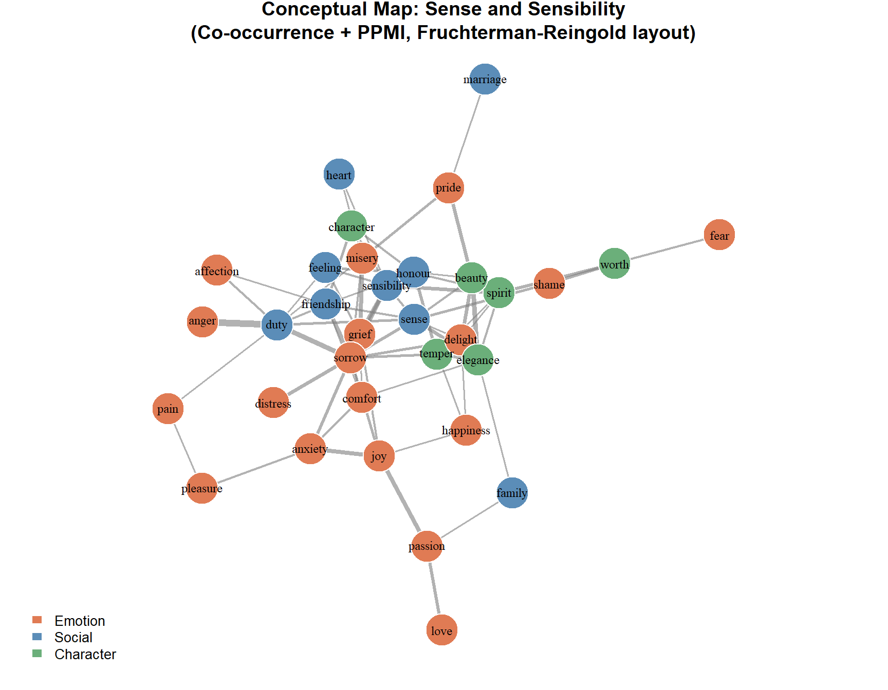
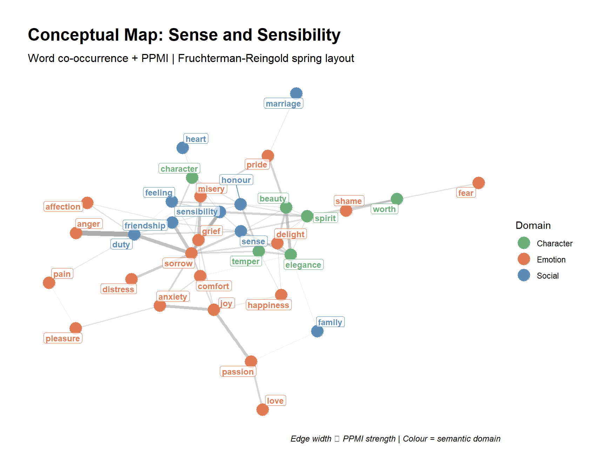
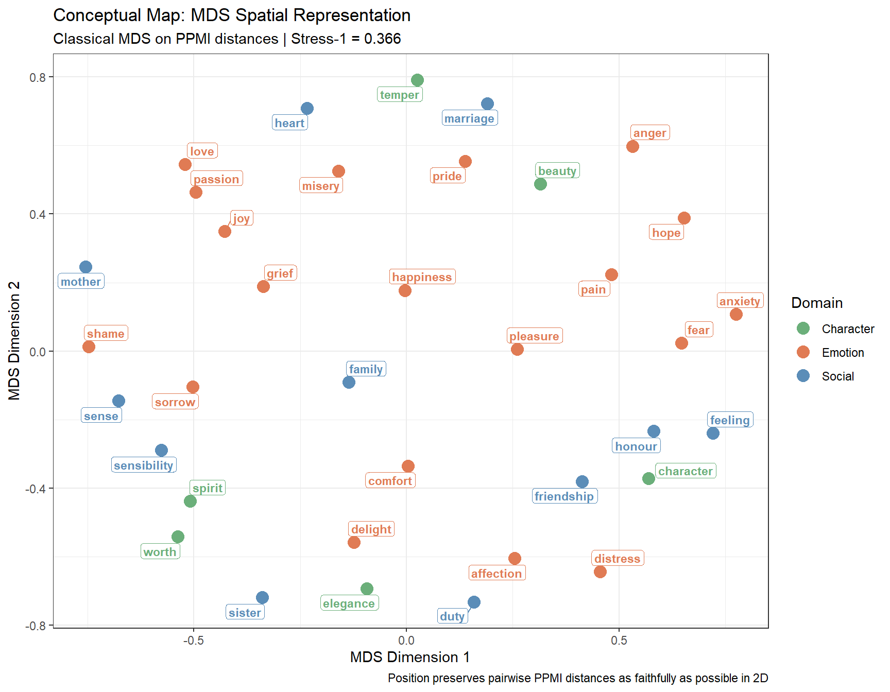

This tutorial introduces conceptual maps — a family of visualisation techniques that represent semantic relationships between words or concepts as a spatial network, where proximity encodes similarity. Conceptual maps have become an increasingly popular tool in corpus linguistics, cognitive linguistics, and digital humanities for exploring how words cluster into meaning domains, how concepts relate across registers or time periods, and how semantic structure can be revealed from large bodies of text (Schneider 2024).
The key idea is simple: words that tend to appear in similar contexts — or that share distributional properties — are semantically related. By converting this distributional information into a similarity matrix and then applying a spring-layout algorithm (or a related graph-drawing method), we can produce two-dimensional maps where semantically close words cluster together and semantically distant words are pushed apart. The maps are not just aesthetically appealing; they are analytically informative, revealing lexical fields, semantic neighbourhoods, and conceptual organisation that would be invisible in a table of numbers.
Gerold Schneider and colleagues have been prominent advocates of conceptual maps as a practical and accessible visualisation tool for linguists (Schneider 2024), making the case that spring-layout graphs offer a more interpretively transparent alternative to purely statistical dimensionality-reduction techniques such as PCA or MDS.
Explain what a conceptual map is, how it differs from a word cloud or a dendrogram, and when it is appropriate
Build three types of similarity matrices from text: word co-occurrence, document-term (TF-IDF), and word embedding cosine similarity
Convert a similarity matrix into a weighted graph and apply a spring-layout algorithm
Produce publication-quality conceptual maps with igraph, ggraph, and qgraph
Interpret the spatial structure of a conceptual map: clusters, bridges, and peripheral nodes
Compare spring-layout maps with classical MDS as an alternative spatial representation
Citation
Martin Schweinberger. 2026. Conceptual Maps in R. The Language Technology and Data Analysis Laboratory (LADAL), The University of Queensland, Australia. url: https://ladal.edu.au/tutorials/conceptmaps/conceptmaps.html (Version 2026.03.27), doi: .
What Is a Conceptual Map?
Section Overview
What you will learn: The conceptual and technical foundations of conceptual maps; how they differ from related visualisations; and the algorithmic principles behind spring-layout graphs
The Core Idea: Distributional Similarity
The distributional hypothesis — one of the foundational principles of computational linguistics — states that words occurring in similar contexts tend to have similar meanings (Firth 1957; Harris 1954). If we count how often words co-occur with each other (or how often they appear in similar document contexts), we can construct a similarity matrix that numerically encodes semantic relatedness.
A conceptual map turns this matrix into a visual space. Words (or concepts, documents, or any linguistic units) become nodes in a graph, and their pairwise similarities become edge weights. A spring-layout algorithm then positions the nodes so that:
Strongly similar pairs are pulled together (short edges, tight clusters)
Weakly similar or dissimilar pairs are pushed apart (long edges or absent edges)
The result is a two-dimensional spatial arrangement where the geometry of the map encodes semantic structure — clusters correspond to lexical fields, bridges correspond to polysemous or connecting words, and peripheral nodes correspond to domain-specific or infrequent terms.
How Spring Layouts Work
The Fruchterman–Reingold algorithm(Fruchterman and Reingold 1991) — the most widely used spring-layout method — models the graph as a physical system:
Each edge acts like a spring: it pulls connected nodes towards each other with a force proportional to their weight
Each pair of nodes exerts a repulsive force: unconnected or weakly connected nodes push each other away
The algorithm iterates until the system reaches a minimum-energy equilibrium
This physical analogy gives the algorithm its name. The final layout minimises a global energy function, placing highly connected nodes near each other and sparsely connected nodes far apart.
Spring Layout vs. Other Spatial Methods
Comparison of spatial visualisation methods for semantic data
Method
What it preserves
Strengths
Limitations
Spring layout (Fruchterman-Reingold)
Graph topology and edge weights
Intuitive clusters; interactive via igraph/ggraph
Layout is stochastic (set a seed!); does not preserve exact distances
Classical MDS
Pairwise distances as faithfully as possible
Mathematically principled; deterministic
Less visually clear for dense graphs
t-SNE / UMAP
Local neighbourhood structure
Excellent for high-dimensional embeddings
Hyperparameter-sensitive; not directly available in base R
PCA (biplot)
Maximum variance directions
Shows axes of variation
Axes not directly interpretable as semantic dimensions
For conceptual maps used in linguistic research, spring layout (with igraph/ggraph) or qgraph are the most common choices. MDS is a useful comparison baseline and is covered in the Dimension Reduction tutorial.
Three Routes to a Conceptual Map
This tutorial covers three methods for constructing the similarity matrix that feeds into the map:
Route 1 — Co-occurrence matrix: Count how often pairs of target words appear within the same window of text (e.g. within 5 words of each other). Convert raw counts to a similarity score (e.g. pointwise mutual information, PMI). Best for exploring the immediate lexical context of a set of target words.
Route 2 — Document-term matrix (TF-IDF): Represent each word as a vector of TF-IDF weights across documents. Compute cosine similarity between word vectors. Best for exploring topical or register-level semantic relationships.
Route 3 — Word embeddings: Use pre-trained dense word vectors (e.g. GloVe) in which each word is represented as a 50–300 dimensional vector. Compute cosine similarity. Best for capturing broad distributional semantics trained on large corpora.
✎ Check Your Understanding — Question 1
Which statement best describes what a spring-layout algorithm does when drawing a conceptual map?
It places words in alphabetical order along the x-axis and by frequency along the y-axis
It positions words so that frequently occurring words are placed at the centre
It arranges words so that strongly similar pairs are pulled together and dissimilar pairs are pushed apart, simulating a physical spring system
It performs principal component analysis and plots the first two components
Answer
c) It arranges words so that strongly similar pairs are pulled together and dissimilar pairs are pushed apart, simulating a physical spring system
The Fruchterman–Reingold spring-layout algorithm models the graph as a physical system of springs (attractive forces between connected nodes) and repulsive charges (between all node pairs). The layout minimises a global energy function, naturally grouping semantically related words into clusters. Options (a) and (b) describe simpler but semantically uninformative arrangements. Option (d) describes PCA, which is a separate dimensionality-reduction technique that does not use graph topology.
Setup
Installing Packages
Code
# Run once — comment out after installationinstall.packages("tidyverse")install.packages("tidytext")install.packages("gutenbergr")install.packages("igraph")install.packages("ggraph")install.packages("qgraph")install.packages("widyr")install.packages("Matrix")install.packages("smacof")install.packages("text2vec")install.packages("flextable")install.packages("ggrepel")install.packages("RColorBrewer")install.packages("viridis")
What you will learn: How to download and prepare a real corpus, construct a toy dataset for experimentation, and understand what data structure feeds into a conceptual map
The Main Example: Sense and Sensibility
Throughout this tutorial we use Jane Austen’s Sense and Sensibility (1811), downloaded from Project Gutenberg. This novel provides a rich vocabulary of emotion, social relations, and domestic life — an ideal domain for exploring semantic clustering.
Code
# Download Sense and Sensibility from Project Gutenberg# gutenberg_id 161sns <-gutenberg_download(161, mirror ="http://mirrors.xmission.com/gutenberg/")# Tokenise to words, remove stop words and punctuationdata("stop_words") # built-in tidytext stop word listsns_words <- sns |># add a paragraph/chunk ID (every 10 lines = one context window) dplyr::mutate(chunk =ceiling(row_number() /10)) |> tidytext::unnest_tokens(word, text) |> dplyr::anti_join(stop_words, by ="word") |> dplyr::filter(str_detect(word, "^[a-z]+$"), # letters onlystr_length(word) >2) # at least 3 characters
Total tokens (after cleaning): 35573
Unique word types: 5760
Number of 10-line chunks: 1268
We focus on a curated set of emotion and social relation words that are frequent enough to produce stable co-occurrence counts. This makes the resulting map interpretable and pedagogically clear.
For readers who want a smaller, fully self-contained example to experiment with, here is a toy co-occurrence matrix for 12 words across three semantic domains. You can use this to test code without downloading the Gutenberg corpus.
Code
# Toy similarity matrix: 12 words, three domains# (body parts, emotions, social roles)toy_words <-c("heart", "hand", "eye", "mind","joy", "fear", "love", "grief","friend", "mother", "sister", "husband")set.seed(42)# Build a structured similarity matrix with within-domain similarity > between-domainn <-length(toy_words)toy_sim <-matrix(0.1, nrow = n, ncol = n,dimnames =list(toy_words, toy_words))diag(toy_sim) <-1# Within-domain similarities (higher)body <-1:4; emotion <-5:8; social <-9:12for (grp inlist(body, emotion, social)) {for (i in grp) for (j in grp) {if (i != j) toy_sim[i, j] <-runif(1, 0.45, 0.75) }}# Cross-domain: heart <-> emotion (polysemy)toy_sim["heart", emotion] <- toy_sim[emotion, "heart"] <-runif(4, 0.3, 0.5)# Ensure symmetrytoy_sim <- (toy_sim +t(toy_sim)) /2diag(toy_sim) <-1cat("Toy similarity matrix (first 6 rows/cols):\n")
Toy similarity matrix (first 6 rows/cols):
Code
round(toy_sim[1:6, 1:6], 2)
heart hand eye mind joy fear
heart 1.00 0.71 0.70 0.60 0.30 0.34
hand 0.71 1.00 0.57 0.60 0.10 0.10
eye 0.70 0.57 1.00 0.66 0.10 0.10
mind 0.60 0.60 0.66 1.00 0.10 0.10
joy 0.30 0.10 0.10 0.10 1.00 0.73
fear 0.34 0.10 0.10 0.10 0.73 1.00
Route 1: Co-occurrence Conceptual Maps
Section Overview
What you will learn: How to count word co-occurrences within context windows, convert counts to PMI similarity scores, threshold the matrix to build a sparse graph, and visualise the result with igraph and ggraph
What Is a Co-occurrence Matrix?
A co-occurrence matrix records how many times each pair of target words appears within the same context window — here, within the same 10-line chunk of text. Words that frequently share contexts are semantically related: they tend to appear in the same scenes, describe the same characters, or participate in the same semantic frame.
Raw counts are converted to Pointwise Mutual Information (PMI):
PMI measures how much more often two words co-occur than would be expected by chance if they were independent. Positive PMI values indicate attraction; negative values (rare in filtered matrices) indicate repulsion. We use positive PMI (PPMI), which floors negative values at zero.
Step 1: Count Co-occurrences
Code
# Keep only target words, then count pairwise chunk co-occurrencessns_target <- sns_words |> dplyr::filter(word %in% target_words)# Count co-occurrences within chunks using widyr::pairwise_countcooc_counts <- sns_target |> widyr::pairwise_count(word, chunk, sort =TRUE, upper =FALSE)cat("Total co-occurrence pairs found:", nrow(cooc_counts), "\n")
# Total chunk appearances per word (marginal counts)word_totals <- sns_target |> dplyr::count(word, name ="n_word")total_chunks <-n_distinct(sns_target$chunk)# Join marginals and compute PMIcooc_pmi <- cooc_counts |> dplyr::rename(w1 = item1, w2 = item2, n_cooc = n) |> dplyr::left_join(word_totals, by =c("w1"="word")) |> dplyr::rename(n_w1 = n_word) |> dplyr::left_join(word_totals, by =c("w2"="word")) |> dplyr::rename(n_w2 = n_word) |> dplyr::mutate(p_cooc = n_cooc / total_chunks,p_w1 = n_w1 / total_chunks,p_w2 = n_w2 / total_chunks,pmi =log2(p_cooc / (p_w1 * p_w2)),ppmi =pmax(pmi, 0) # floor at 0 (positive PMI only) ) |> dplyr::filter(ppmi >0) # keep only pairs with positive associationcat("Pairs with positive PMI:", nrow(cooc_pmi), "\n")
Pairs with positive PMI: 174
Step 3: Build and Threshold the Graph
For a readable map, we retain only the strongest edges. Keeping all pairs produces a dense hairball; thresholding to the top edges reveals the underlying cluster structure.
Code
# Keep top edges by PPMI — enough for a readable mapppmi_threshold <-quantile(cooc_pmi$ppmi, 0.60) # top 40% of pairscooc_edges <- cooc_pmi |> dplyr::filter(ppmi >= ppmi_threshold) |> dplyr::select(from = w1, to = w2, weight = ppmi)# Build igraph objectg_cooc <- igraph::graph_from_data_frame(cooc_edges, directed =FALSE)# Add semantic domain as a node attribute for colouring# Using case_when avoids fragile rep() counts that break if target_words changesdomain_lookup <- tibble::tibble(word = target_words) |> dplyr::mutate(domain = dplyr::case_when( word %in%c("love", "hope", "fear", "joy", "pain", "grief", "happiness","sorrow", "pleasure", "affection", "passion", "anxiety","distress", "comfort", "delight", "misery", "pride","shame", "anger") ~"Emotion", word %in%c("friendship", "marriage", "family", "sister", "mother","heart", "feeling", "sensibility", "sense", "honour","duty") ~"Social",TRUE~"Character" ))domain_vec <- domain_lookup$domain[match(V(g_cooc)$name, domain_lookup$word)]V(g_cooc)$domain <- domain_veccat("Nodes in graph:", vcount(g_cooc), "\n")
Nodes in graph: 33
Code
cat("Edges in graph:", ecount(g_cooc), "\n")
Edges in graph: 70
Step 4: Draw the Spring-Layout Map with igraph
Code
set.seed(2024) # spring layout is stochastic — always set a seed for reproducibility# Compute Fruchterman-Reingold layoutlay <- igraph::layout_with_fr(g_cooc, weights =E(g_cooc)$weight)# Colour palette by domaindomain_cols <-c("Emotion"="#E07B54", "Social"="#5B8DB8", "Character"="#6BAF7A")node_cols <- domain_cols[V(g_cooc)$domain]# Plotpar(mar =c(1, 1, 2, 1))plot( g_cooc,layout = lay,vertex.color = node_cols,vertex.size =12,vertex.label =V(g_cooc)$name,vertex.label.cex =0.75,vertex.label.color ="black",vertex.frame.color ="white",edge.width =E(g_cooc)$weight *1.5,edge.color =adjustcolor("gray50", alpha.f =0.6),main ="Conceptual Map: Sense and Sensibility\n(Co-occurrence + PPMI, Fruchterman-Reingold layout)")legend("bottomleft",legend =names(domain_cols),fill = domain_cols,border ="white",bty ="n",cex =0.85)

Always Set a Seed
The Fruchterman–Reingold spring-layout algorithm is stochastic — it starts from a random initialisation and may produce a different spatial arrangement each run. Always use set.seed() before computing the layout so your maps are reproducible. Different seeds may rotate or mirror the map but should preserve the cluster structure.
Step 5: Draw the Map with ggraph
ggraph integrates spring-layout graphs into the ggplot2 ecosystem, giving finer control over aesthetics and allowing the use of ggplot2 themes, scales, and annotations.
Code
set.seed(2024)ggraph(g_cooc, layout ="fr") +# edges: width and transparency proportional to PPMI strengthgeom_edge_link(aes(width = weight, alpha = weight),color ="gray60", show.legend =FALSE) +scale_edge_width(range =c(0.3, 2.5)) +scale_edge_alpha(range =c(0.2, 0.8)) +# nodes: coloured by semantic domaingeom_node_point(aes(color = domain), size =6) +scale_color_manual(values = domain_cols, name ="Domain") +# labels with repulsion to avoid overlapgeom_node_label(aes(label = name, color = domain),repel =TRUE,size =3.2,fontface ="bold",label.padding =unit(0.15, "lines"),label.size =0,fill =alpha("white", 0.7),show.legend =FALSE) +theme_graph(base_family ="sans") +labs(title ="Conceptual Map: Sense and Sensibility",subtitle ="Word co-occurrence + PPMI | Fruchterman-Reingold spring layout",caption ="Edge width ∝ PPMI strength | Colour = semantic domain")

Reading a Conceptual Map
When interpreting a spring-layout conceptual map, look for:
Clusters — groups of tightly connected nodes sharing many strong edges. These correspond to lexical fields or semantic neighbourhoods. In the map above, emotion words (grief, sorrow, pain, distress) should cluster together, as should social-relation words (marriage, friendship, family).
Bridges — nodes that connect two otherwise separate clusters. A bridge word is typically polysemous or semantically broad. In this Austen map, heart and feeling often appear as bridges between the emotion cluster and the social/moral cluster.
Peripheral nodes — words with few strong connections, placed at the edges of the map. These tend to be domain-specific terms that appear in only a narrow range of contexts.
Central nodes — words with many strong connections, placed near the centre. These are typically high-frequency, semantically broad words that act as hubs.
✎ Check Your Understanding — Question 2
In a co-occurrence conceptual map, what does a high PPMI value between two words indicate?
The two words are syntactically related (e.g. subject and verb)
The two words co-occur much more often than expected by chance, suggesting semantic association
One word is more frequent than the other
The two words never appear in the same sentence
Answer
b) The two words co-occur much more often than expected by chance, suggesting semantic association
PPMI (Positive Pointwise Mutual Information) measures the log ratio of the observed co-occurrence probability to the probability expected if the two words were statistically independent. A high PPMI value means the pair co-occurs far more than chance predicts, which is a strong signal of semantic relatedness — either because they appear in the same semantic frame, describe the same entity, or participate in the same discourse topic. PPMI is not sensitive to syntactic roles (a) and does not measure frequency asymmetry (c) or absence of co-occurrence (d).
Route 2: TF-IDF Document-Term Conceptual Maps
Section Overview
What you will learn: How to represent words as TF-IDF vectors across documents, compute cosine similarity between word vectors, and build a conceptual map that reflects topical rather than immediate-context similarity
From Co-occurrence to Document Similarity
The co-occurrence approach captures syntagmatic similarity: words that tend to appear near each other. A document-term approach captures paradigmatic similarity: words that tend to appear in the same kinds of documents or text segments, even if not adjacent.
We divide the novel into chapters (treating each chapter as a “document”), compute a TF-IDF matrix, and then compute cosine similarity between the row vectors corresponding to each target word. Two words are similar if they have high TF-IDF weights in the same chapters.
Co-occurrence vs. TF-IDF Maps: What Is the Difference?
The two maps capture different aspects of semantic relatedness:
Co-occurrence (PPMI): captures local syntagmatic association — words that appear near each other within a few lines. This tends to produce tighter clusters within semantic frames (e.g. grief–sorrow–pain all appearing in scenes of emotional distress).
TF-IDF cosine: captures global paradigmatic association — words that are characteristic of the same chapters or discourse contexts. This tends to produce broader topical groupings (e.g. all words associated with Mrs. Dashwood’s storyline clustering together, regardless of whether they appear adjacent to each other).
Comparing the two maps for the same vocabulary can reveal whether your semantic clusters are driven by immediate collocation or by broader thematic co-occurrence.
✎ Check Your Understanding — Question 3
A researcher builds a TF-IDF conceptual map of legal vocabulary across 50 court documents. Two terms — “plaintiff” and “defendant” — appear in almost every document with similar TF-IDF weights, but never appear in the same sentence. Where would they be positioned in the map?
Very far apart, because they never co-occur in the same sentence
Close together, because they appear in the same documents with similar TF-IDF profiles
At the periphery, because they are too common to have high TF-IDF values
Exactly at the centre, because they are the most important legal terms
Answer
b) Close together, because they appear in the same documents with similar TF-IDF profiles
TF-IDF conceptual maps measure similarity based on the document-level distribution of words — which documents or text segments a word tends to be characteristic of. If “plaintiff” and “defendant” both have high TF-IDF values in the same set of court documents (adversarial proceedings rather than regulatory filings), their row vectors in the TF-IDF matrix will be similar, and cosine similarity will be high regardless of whether they co-occur within the same sentence. Option (a) would be correct for a co-occurrence map, but not for a TF-IDF map. Option (c) is incorrect: terms that appear in every document would have low IDF and thus low TF-IDF, but “plaintiff” and “defendant” are typically specific to certain document types.
Route 3: Word Embedding Conceptual Maps
Section Overview
What you will learn: How to load pre-trained GloVe word vectors, extract vectors for target words, compute cosine similarity, and build a conceptual map that reflects broad distributional semantics trained on large external corpora
Why Word Embeddings?
Both the co-occurrence and TF-IDF approaches build semantic representations from the corpus at hand — in this case, a single novel. This works well for corpus-internal analysis but means that the quality and coverage of the map depends entirely on the size and diversity of that corpus.
Word embeddings (word2vec, GloVe, fastText) are dense, low-dimensional vector representations trained on billions of words of text. Each word is a point in a 50–300 dimensional space, and the geometry of that space encodes semantic and syntactic relationships: similar words are close together, and relational analogies appear as vector arithmetic (king − man + woman ≈ queen).
For a conceptual map, we extract the embedding vectors for our target words and compute cosine similarity between them. The resulting map reflects the word’s semantic neighbourhood in the broad distributional space — often more stable and linguistically informative than corpus-internal counts for small or domain-specific corpora.
Loading Pre-trained GloVe Vectors
We use the 50-dimensional GloVe vectors (trained on Wikipedia + Gigaword, 6 billion tokens) available from the Stanford NLP Group. The full file is ~170MB; we load only the vectors we need.
Code
# Download GloVe vectors (run once; requires internet access)# Full file: https://nlp.stanford.edu/data/glove.6B.zip# After unzipping, load glove.6B.50d.txtglove_path <-"data/glove.6B.50d.txt"# adjust path as needed# Read the file — each row is a word followed by 50 float valuesglove_raw <- data.table::fread(glove_path, header =FALSE,quote ="", data.table =FALSE)colnames(glove_raw) <-c("word", paste0("V", 1:50))# Extract rows for target words onlyglove_target <- glove_raw |> dplyr::filter(word %in% target_words)# Save for later reusesaveRDS(glove_target, "data/glove_target.rds")
If You Do Not Have the GloVe File
The GloVe vectors are not bundled with this tutorial because of file size. You can:
A researcher builds a conceptual map using GloVe embeddings trained on Wikipedia. She finds that “sensibility” and “sensitivity” are positioned very close together. A colleague suggests this is a mistake. Who is right, and why?
The colleague is right — the words have different meanings and should be far apart
The researcher is right — the words have similar distributional contexts in Wikipedia (scientific and literary discourse) and their embedding cosines will be high
Neither is right — embeddings do not capture near-synonymy
The colleague is right — only co-occurrence maps can detect near-synonymy
Answer
b) The researcher is right — the words have similar distributional contexts in Wikipedia and their embedding cosines will be high
Word embeddings encode distributional similarity — words that appear in similar contexts across the training corpus. “Sensibility” and “sensitivity” both appear in intellectual, scientific, and literary discourse contexts; both collocate with similar adjectives (heightened, emotional, moral) and appear as subject or object of similar verbs. Their contextual profiles are genuinely similar, which is reflected in their close embedding positions. This is not a mistake — it is a feature: near-synonyms and semantically related words are correctly close in embedding space. The maps are revealing something real about the words’ distributional equivalence in broad English usage, which is exactly what embedding maps are designed to show.
Training Your Own GloVe Vectors with text2vec
If you prefer to train vectors directly on your own corpus rather than using pre-trained ones, text2vec provides a fast, memory-efficient GloVe implementation.
Code
# Train GloVe on Sense and Sensibility using text2vec# Step 1: create an iterator over the textcorpus_text <- sns |> dplyr::pull(text) |>tolower() |>str_replace_all("[^a-z ]", " ")tokens_iter <-itoken(corpus_text,tokenizer = word_tokenizer,progressbar =FALSE)# Step 2: build vocabulary (remove rare words)vocab <-create_vocabulary(tokens_iter) |>prune_vocabulary(term_count_min =5)vectorizer <-vocab_vectorizer(vocab)# Step 3: build co-occurrence matrix with window = 5tcm <-create_tcm(itoken(corpus_text, tokenizer = word_tokenizer,progressbar =FALSE), vectorizer, skip_grams_window =5)# Step 4: fit GloVe (50 dims, 20 iterations)glove_model <- GlobalVectors$new(rank =50, x_max =10)wv_main <- glove_model$fit_transform(tcm, n_iter =20, convergence_tol =0.001)wv_context <- glove_model$components# GloVe uses sum of main and context vectorsword_vectors <- wv_main +t(wv_context)# Extract target wordstarget_idx <-intersect(target_words, rownames(word_vectors))embed_custom <- word_vectors[target_idx, ]cat("Custom GloVe: trained", nrow(embed_custom), "target word vectors\n")
Pre-trained vs. Corpus-trained Embeddings for Conceptual Maps
Pre-trained (GloVe, word2vec, fastText): - Trained on billions of words — stable, high-coverage representations - Reflect general English usage, not your specific corpus - Best when you want to explore the word’s broad semantic neighbourhood
Corpus-trained: - Reflect the specific register, time period, or domain of your corpus - Require a reasonably large corpus (at least 1–5 million tokens for stable estimates) - Best when you want to explore how meaning is organised within a particular text collection
For small corpora (< 500k tokens), pre-trained embeddings almost always produce better conceptual maps. For large specialised corpora (legal texts, medical records, historical newspapers), corpus-trained embeddings reveal domain-specific semantic structure that general embeddings would miss.
qgraph: Psychometric-Style Conceptual Maps
Section Overview
What you will learn: How to use qgraph — originally designed for psychometric network analysis — to produce polished weighted-network conceptual maps with additional community detection and edge-filtering options
Why qgraph?
qgraph(Epskamp et al. 2012) was designed for visualising correlation and partial correlation matrices in psychology, but its design maps naturally onto semantic similarity matrices. Key advantages over plain igraph:
Automatic edge filtering:qgraph can apply a minimum edge weight threshold (the minimum argument) and prune weak edges cleanly
Community detection: built-in integration with community detection algorithms colours nodes by cluster automatically
Consistent aesthetics: polished defaults that require less manual tuning
Spring layout by default: uses the Fruchterman–Reingold algorithm with sensible defaults for similarity matrices
A qgraph Conceptual Map from Co-occurrence Similarities
We use the full PPMI matrix (converted to a symmetric word × word matrix) as direct input to qgraph. It accepts similarity matrices natively.
Suppress edges below this weight (reduces clutter)
cut
Edges above cut are drawn as lines; below as curves — useful for distinguishing strong and weak edges
vsize
Node size
color
Node colours (vector, one per node)
posCol
Colour for positive edges
negCol
Colour for negative edges (useful for partial correlation maps)
groups
Named list of node groups — qgraph colours automatically
MDS as a Comparison Baseline
Section Overview
What you will learn: How classical multidimensional scaling (MDS) provides an alternative spatial representation of the same similarity matrix, and how it compares to spring-layout maps
Classical MDS
Classical Multidimensional Scaling (cMDS) converts a distance matrix into a two-dimensional spatial arrangement that minimises stress — the discrepancy between the original pairwise distances and the Euclidean distances in the 2D plot. Unlike spring-layout algorithms, MDS is deterministic (no random initialisation) and distance-preserving (the 2D positions faithfully reflect pairwise similarities as closely as possible in two dimensions).
MDS and spring-layout answer slightly different questions:
Spring layout: “What graph drawing minimises the energy of the spring system?” — prioritises cluster structure and topology
MDS: “What 2D positions best preserve the original pairwise distances?” — prioritises metric faithfulness
Code
# Convert PPMI similarity to distance: dist = 1 - sim (after normalising to [0,1])ppmi_norm <- ppmi_mat /max(ppmi_mat)ppmi_dist <-as.dist(1- ppmi_norm)# Classical MDS using smacof for stress-1 minimisationset.seed(2024)mds_result <- smacof::smacofSym(ppmi_dist, ndim =2, verbose =FALSE)mds_coords <-as.data.frame(mds_result$conf) |> tibble::rownames_to_column("word") |> dplyr::left_join(domain_lookup, by ="word")cat("MDS Stress-1:", round(mds_result$stress, 3),"(< 0.10 = good fit; < 0.20 = acceptable)\n")
ggplot(mds_coords, aes(x = D1, y = D2, color = domain, label = word)) +geom_point(size =4) +scale_color_manual(values = domain_cols, name ="Domain") +geom_label_repel(size =3, fontface ="bold",label.padding =unit(0.15, "lines"),label.size =0,fill =alpha("white", 0.75),show.legend =FALSE) +theme_bw() +labs(title ="Conceptual Map: MDS Spatial Representation",subtitle =paste0("Classical MDS on PPMI distances | Stress-1 = ",round(mds_result$stress, 3)),x ="MDS Dimension 1",y ="MDS Dimension 2",caption ="Position preserves pairwise PPMI distances as faithfully as possible in 2D" )

Interpreting MDS Stress
The stress-1 value measures how well the 2D MDS solution reproduces the original high-dimensional distances. Kruskal’s rule of thumb:
Stress-1
Interpretation
< 0.05
Excellent
0.05–0.10
Good
0.10–0.20
Acceptable
> 0.20
Poor — interpret with caution
High stress means the 2D representation distorts the true distances substantially. In such cases, examining a 3D MDS solution (or switching to t-SNE/UMAP for high-dimensional embedding data) may be warranted.
✎ Check Your Understanding — Question 5
A researcher produces both a spring-layout conceptual map and an MDS map from the same similarity matrix. The cluster structure looks different in the two maps. Which statement best explains this?
One of the maps must contain an error — they should look identical
Spring layout and MDS optimise different objective functions: spring layout minimises graph energy while MDS minimises the distortion of pairwise distances; the same underlying similarities can produce different spatial arrangements
MDS is always more accurate than spring layout and should be preferred
Spring layout is always more accurate than MDS because it uses a physical simulation
Answer
b) Spring layout and MDS optimise different objective functions: spring layout minimises graph energy while MDS minimises the distortion of pairwise distances; the same underlying similarities can produce different spatial arrangements
The two methods are not interchangeable views of the same thing — they optimise fundamentally different criteria. Spring layout (Fruchterman-Reingold) places nodes to minimise a global energy function that balances attractive spring forces and repulsive charges; it emphasises the graph topology and community structure. MDS minimises a stress function that measures how well 2D Euclidean distances match the original similarity distances; it emphasises metric faithfulness. Both maps are correct representations of the same data — they just emphasise different properties. Neither is universally better: spring layout is typically preferred for highlighting clusters and bridges; MDS is preferred when the precise relative distances between words matter.
Interpreting and Refining Conceptual Maps
Section Overview
What you will learn: Systematic strategies for interpreting conceptual maps; how to add community detection, node sizing, and annotation; and practical tips for making publication-quality maps
Community Detection
Community detection algorithms identify clusters of densely interconnected nodes — lexical fields in a semantic map. We use the Louvain algorithm (Hendrickx and Blondel 2008), which is fast and performs well on weighted graphs.
Code
set.seed(2024)# Run Louvain community detection on the co-occurrence graphcommunities <- igraph::cluster_louvain(g_cooc, weights =E(g_cooc)$weight)# Add community membership to nodesV(g_cooc)$community <-as.character(membership(communities))cat("Number of communities detected:", length(communities), "\n")
Node centrality measures how important a node is in the network. For conceptual maps, high-centrality words are semantic hubs — words that connect many other words and occupy a central position in the semantic space.
Centrality measures and their linguistic interpretation
Measure
What it captures
Linguistic interpretation
Degree
Number of edges
How many other words this word co-occurs with
Strength
Sum of edge weights
Total association weight — overall importance in the network
Betweenness
How often on shortest paths
Bridge words: connects otherwise separate clusters
Eigenvector
Centrality of neighbours
Connected to other important words — core vocabulary
High betweenness with moderate degree is the hallmark of a bridge word — a polysemous or cross-domain term that links otherwise distinct semantic fields. In Austen’s vocabulary, heart and feeling often show this pattern, connecting the emotion domain and the social/moral domain.
A word in a conceptual map has high betweenness centrality but only moderate degree. What does this suggest about that word’s role in the semantic network?
The word is highly frequent in the corpus
The word is peripheral and unimportant
The word acts as a bridge between otherwise disconnected communities — it is a semantically broad or polysemous connector
The word has an error in its co-occurrence counts
Answer
c) The word acts as a bridge between otherwise disconnected communities — it is a semantically broad or polysemous connector
Betweenness centrality measures how often a node lies on the shortest path between other pairs of nodes. A word with high betweenness but moderate degree is not directly connected to many words (so its degree is moderate), but the connections it does have bridge otherwise separate clusters — making it a semantic connector or polysemous hub. In a lexical network, such words often belong to multiple semantic fields simultaneously: heart connects body, emotion, and moral character; sense bridges cognitive and social domains. This pattern is linguistically meaningful and warrants close attention when interpreting a conceptual map.
Practical Tips and Common Pitfalls
Section Overview
What you will learn: How to avoid common mistakes when constructing and interpreting conceptual maps, and practical guidance on thresholding, vocabulary selection, and reporting
Choosing Your Vocabulary
The quality and interpretability of a conceptual map depends critically on vocabulary selection. Some guidelines:
Vocabulary Selection Guidelines
Size: aim for 20–80 target words for a readable map. Fewer than 15 produces an underconnected graph; more than 100 produces a visual hairball even after thresholding.
Frequency: words that appear fewer than 5–10 times in the corpus will have unreliable co-occurrence counts. Filter by minimum frequency before computing PPMI.
Semantic focus: the most informative maps focus on a theoretically motivated vocabulary — a semantic field (emotion words, legal terms, body-part metaphors) rather than arbitrary frequency lists.
Avoid function words: stopword removal is essential. Function words (the, and, is) have high frequency and co-occur with everything, producing meaningless dense connections.
Check coverage: after filtering, confirm that most of your target words appear in the map. Words absent from the corpus entirely will be dropped silently.
Thresholding: How Much to Prune?
Choosing the right similarity threshold is more art than science. The goal is to reveal structure without producing either a disconnected scatter or an unreadable hairball.
A useful heuristic is to choose the threshold at which the largest connected component contains most of your target words but individual clusters are still visually distinguishable. Start at the 50th–65th percentile of your edge weights and adjust until the map is readable. Always report the threshold used.
Reproducibility Checklist
Before reporting a conceptual map in a publication or presentation:
Reproducibility Checklist for Conceptual Maps
Summary
This tutorial has introduced conceptual maps as a practical, visually rich tool for exploring semantic structure in linguistic data. The key points are:
Three routes to a conceptual map:
Three routes to a conceptual map
Route
Input
Similarity measure
Best for
Co-occurrence
Raw corpus text
PPMI
Local syntagmatic relations
TF-IDF
Corpus divided into documents
Cosine similarity
Topical / register-level relations
Word embeddings
Pre-trained or corpus-trained vectors
Cosine similarity
Broad distributional semantics
Three visualisation approaches:
igraph + ggraph: maximum flexibility, integrates with ggplot2, supports community detection and centrality overlays
qgraph: polished defaults, built-in edge filtering, well-suited to similarity/correlation matrices
MDS (smacof): distance-preserving alternative, deterministic, good complement to spring-layout maps
A researcher wants to map how emotion vocabulary is organised in a historical newspaper corpus (1850–1950, 50 million tokens). She has 60 target emotion words. Which combination of approaches would you recommend, and why?
TF-IDF map only — historical corpora require document-level analysis
Pre-trained GloVe embeddings only — 50 million tokens is not enough to train custom embeddings
Co-occurrence PPMI map using the corpus itself, with corpus-trained GloVe embeddings as a comparison; both with ggraph and community detection overlay
MDS only — spring layout is unreliable for historical data
Answer
c) Co-occurrence PPMI map using the corpus itself, with corpus-trained GloVe embeddings as a comparison; both with ggraph and community detection overlay
50 million tokens is more than sufficient to train stable GloVe embeddings (the rule of thumb is 1–5 million tokens minimum). Corpus-trained embeddings will capture domain-specific historical usage — how Victorian newspapers used emotion vocabulary — which pre-trained modern GloVe would miss (it reflects contemporary English usage). Running both a PPMI co-occurrence map (local collocation patterns) and an embedding map (broader distributional semantics) allows comparison and cross-validation of clusters. ggraph with a community detection overlay is well-suited to 60 nodes. MDS is a useful complement but not a replacement; option (a) is overly restrictive; option (b) is incorrect about the corpus size threshold.
Citation and Session Info
Citation
Martin Schweinberger. 2026. Conceptual Maps in R. The Language Technology and Data Analysis Laboratory (LADAL), The University of Queensland, Australia. url: https://ladal.edu.au/tutorials/conceptmaps/conceptmaps.html (Version 2026.03.27), doi: .
@manual{martinschweinberger2026conceptual,
author = {Martin Schweinberger},
title = {Conceptual Maps in R},
year = {2026},
note = {https://ladal.edu.au/tutorials/conceptmaps/conceptmaps.html},
organization = {The Language Technology and Data Analysis Laboratory (LADAL), The University of Queensland, Australia},
edition = {2026.03.27}
doi = {}
}
This tutorial was revised and substantially expanded with the assistance of Claude (claude.ai), a large language model created by Anthropic. Claude was used to restructure the document into Quarto format, expand the theoretical introduction, add the new sections and accompanying callouts, expand interpretation guidance across all sections, write the new quiz questions and detailed answer explanations, and produce the comparison summary table. All content was reviewed, edited, and approved by the author (Martin Schweinberger), who takes full responsibility for its accuracy.
Epskamp, Sacha, Angélique OJ Cramer, Lourens J Waldorp, Verena D Schmittmann, and Denny Borsboom. 2012. “Qgraph: Network Visualizations of Relationships in Psychometric Data.”Journal of Statistical Software 48: 1–18.
Firth, John R. 1957. “A Synopsis of Linguistic Theory, 1930–1955.” In Studies in Linguistic Analysis, 1–32. Oxford: Blackwell.
Fruchterman, Thomas MJ, and Edward M Reingold. 1991. “Graph Drawing by Force-Directed Placement.”Software: Practice and Experience 21 (11): 1129–64.
Harris, Zellig S. 1954. “Distributional Structure.”Word 10 (2-3): 146–62.
Hendrickx, Julien M, and V Blondel. 2008. “Graphs and Networks for the Analysis of Autonomous Agent Systems.” PhD thesis, Catholic University of Louvain, Louvain-la-Neuve, Belgium.
Schneider, Gerold. 2024. “The Visualisation and Evaluation of Semantic and Conceptual Maps.”Linguistics Across Disciplinary Borders: The March of Data. Bloomsbury Publishing (UK), London, 67–94.
Source Code
---title: "Conceptual Maps in R"author: "Martin Schweinberger"date: "2026"params: title: "Conceptual Maps in R" author: "Martin Schweinberger" year: "2026" version: "2026.03.27" url: "https://ladal.edu.au/tutorials/conceptmaps/conceptmaps.html" institution: "The Language Technology and Data Analysis Laboratory (LADAL), The University of Queensland, Australia" description: "This showcase tutorial demonstrates how to create conceptual maps — spring-layout visualisations of semantic similarity — in R using igraph, ggraph, and qgraph, covering three input types: word co-occurrence (PPMI), TF-IDF document-term matrices, and pre-trained GloVe word embeddings. It is aimed at researchers in corpus linguistics, cognitive linguistics, and digital humanities who want to visualise lexical fields, semantic clustering, and word relationships." doi: "10.5281/zenodo.19332087"format: html: toc: true toc-depth: 4 code-fold: show code-tools: true theme: cosmo---```{r setup, echo=FALSE, message=FALSE, warning=FALSE}options(stringsAsFactors = FALSE)options("scipen" = 100, "digits" = 12)```{width="100%" height="400px" loading="lazy"}# Introduction {#intro}This tutorial introduces **conceptual maps** — a family of visualisation techniques that represent semantic relationships between words or concepts as a spatial network, where proximity encodes similarity. Conceptual maps have become an increasingly popular tool in corpus linguistics, cognitive linguistics, and digital humanities for exploring how words cluster into meaning domains, how concepts relate across registers or time periods, and how semantic structure can be revealed from large bodies of text [@schneider2024visualisation].{ width=15% style="float:right; padding:10px" }The key idea is simple: words that tend to appear in similar contexts — or that share distributional properties — are semantically related. By converting this distributional information into a similarity matrix and then applying a **spring-layout algorithm** (or a related graph-drawing method), we can produce two-dimensional maps where semantically close words cluster together and semantically distant words are pushed apart. The maps are not just aesthetically appealing; they are analytically informative, revealing lexical fields, semantic neighbourhoods, and conceptual organisation that would be invisible in a table of numbers.Gerold Schneider and colleagues have been prominent advocates of conceptual maps as a practical and accessible visualisation tool for linguists [@schneider2024visualisation], making the case that spring-layout graphs offer a more interpretively transparent alternative to purely statistical dimensionality-reduction techniques such as PCA or MDS.::: {.callout-note}## Prerequisite TutorialsThis tutorial assumes familiarity with:- [Getting Started with R](/tutorials/intror/intror.html) — basic R syntax and RStudio- [String Processing](/tutorials/string/string.html) — text manipulation with `stringr`- [Introduction to Data Visualization](/tutorials/introviz/introviz.html) — `ggplot2` fundamentals- [Introduction to Text Analysis](/tutorials/introta/introta.html) — basic corpus conceptsFamiliarity with [Network Analysis](/tutorials/net/net.html) is helpful but not required.:::::: {.callout-note}## Learning ObjectivesBy the end of this tutorial you will be able to:1. Explain what a conceptual map is, how it differs from a word cloud or a dendrogram, and when it is appropriate2. Build three types of similarity matrices from text: word co-occurrence, document-term (TF-IDF), and word embedding cosine similarity3. Convert a similarity matrix into a weighted graph and apply a spring-layout algorithm4. Produce publication-quality conceptual maps with `igraph`, `ggraph`, and `qgraph`5. Interpret the spatial structure of a conceptual map: clusters, bridges, and peripheral nodes6. Compare spring-layout maps with classical MDS as an alternative spatial representation:::::: {.callout-note}## Citation```{r citation-callout-top, echo=FALSE, results='asis'}cat( params$author, ". ", params$year, ". *", params$title, "*. ", params$institution, ". ", "url: ", params$url, " ", "(Version ", params$version, "), ", "doi: ", params$doi, ".", sep = "")```:::---# What Is a Conceptual Map? {#whatare}::: {.callout-note}## Section Overview**What you will learn:** The conceptual and technical foundations of conceptual maps; how they differ from related visualisations; and the algorithmic principles behind spring-layout graphs:::## The Core Idea: Distributional Similarity {-}The distributional hypothesis — one of the foundational principles of computational linguistics — states that words occurring in similar contexts tend to have similar meanings [@firth1957synopsis; @harris1954distributional]. If we count how often words co-occur with each other (or how often they appear in similar document contexts), we can construct a **similarity matrix** that numerically encodes semantic relatedness.A conceptual map turns this matrix into a visual space. Words (or concepts, documents, or any linguistic units) become **nodes** in a graph, and their pairwise similarities become **edge weights**. A spring-layout algorithm then positions the nodes so that:- **Strongly similar pairs** are pulled together (short edges, tight clusters)- **Weakly similar or dissimilar pairs** are pushed apart (long edges or absent edges)The result is a two-dimensional spatial arrangement where the **geometry of the map encodes semantic structure** — clusters correspond to lexical fields, bridges correspond to polysemous or connecting words, and peripheral nodes correspond to domain-specific or infrequent terms.## How Spring Layouts Work {-}The **Fruchterman–Reingold algorithm** [@fruchterman1991graph] — the most widely used spring-layout method — models the graph as a physical system:- Each edge acts like a **spring**: it pulls connected nodes towards each other with a force proportional to their weight- Each pair of nodes exerts a **repulsive force**: unconnected or weakly connected nodes push each other away- The algorithm iterates until the system reaches a minimum-energy equilibriumThis physical analogy gives the algorithm its name. The final layout minimises a global energy function, placing highly connected nodes near each other and sparsely connected nodes far apart.::: {.callout-tip}## Spring Layout vs. Other Spatial Methods| Method | What it preserves | Strengths | Limitations ||--------|------------------|-----------|-------------|| Spring layout (Fruchterman-Reingold) | Graph topology and edge weights | Intuitive clusters; interactive via `igraph`/`ggraph` | Layout is stochastic (set a seed!); does not preserve exact distances || Classical MDS | Pairwise distances as faithfully as possible | Mathematically principled; deterministic | Less visually clear for dense graphs || t-SNE / UMAP | Local neighbourhood structure | Excellent for high-dimensional embeddings | Hyperparameter-sensitive; not directly available in base R || PCA (biplot) | Maximum variance directions | Shows axes of variation | Axes not directly interpretable as semantic dimensions |: Comparison of spatial visualisation methods for semantic data {tbl-colwidths="[28,25,25,22]"}For conceptual maps used in linguistic research, spring layout (with `igraph`/`ggraph`) or `qgraph` are the most common choices. MDS is a useful comparison baseline and is covered in the [Dimension Reduction tutorial](/tutorials/dimred/dimred.html).:::## Three Routes to a Conceptual Map {-}This tutorial covers three methods for constructing the similarity matrix that feeds into the map:**Route 1 — Co-occurrence matrix:** Count how often pairs of target words appear within the same window of text (e.g. within 5 words of each other). Convert raw counts to a similarity score (e.g. pointwise mutual information, PMI). Best for exploring the **immediate lexical context** of a set of target words.**Route 2 — Document-term matrix (TF-IDF):** Represent each word as a vector of TF-IDF weights across documents. Compute cosine similarity between word vectors. Best for exploring **topical or register-level** semantic relationships.**Route 3 — Word embeddings:** Use pre-trained dense word vectors (e.g. GloVe) in which each word is represented as a 50–300 dimensional vector. Compute cosine similarity. Best for capturing **broad distributional semantics** trained on large corpora.::: {.callout-note collapse="true"}## ✎ Check Your Understanding — Question 1**Which statement best describes what a spring-layout algorithm does when drawing a conceptual map?**a) It places words in alphabetical order along the x-axis and by frequency along the y-axisb) It positions words so that frequently occurring words are placed at the centrec) It arranges words so that strongly similar pairs are pulled together and dissimilar pairs are pushed apart, simulating a physical spring systemd) It performs principal component analysis and plots the first two components<details><summary>**Answer**</summary>**c) It arranges words so that strongly similar pairs are pulled together and dissimilar pairs are pushed apart, simulating a physical spring system**The Fruchterman–Reingold spring-layout algorithm models the graph as a physical system of springs (attractive forces between connected nodes) and repulsive charges (between all node pairs). The layout minimises a global energy function, naturally grouping semantically related words into clusters. Options (a) and (b) describe simpler but semantically uninformative arrangements. Option (d) describes PCA, which is a separate dimensionality-reduction technique that does not use graph topology.</details>:::---# Setup {#setup}## Installing Packages {-}```{r prep0, echo=TRUE, eval=FALSE, message=FALSE, warning=FALSE}# Run once — comment out after installationinstall.packages("tidyverse")install.packages("tidytext")install.packages("gutenbergr")install.packages("igraph")install.packages("ggraph")install.packages("qgraph")install.packages("widyr")install.packages("Matrix")install.packages("smacof")install.packages("text2vec")install.packages("flextable")install.packages("ggrepel")install.packages("RColorBrewer")install.packages("viridis")```## Loading Packages {-}```{r prep1, echo=TRUE, eval=TRUE, message=FALSE, warning=FALSE}options(stringsAsFactors = FALSE)options("scipen" = 100, "digits" = 12)library(tidyverse)library(tidytext)library(gutenbergr)library(igraph)library(ggraph)library(qgraph)library(widyr)library(Matrix)library(smacof)library(text2vec)library(flextable)library(ggrepel)library(RColorBrewer)library(viridis)```---# Building the Data {#data}::: {.callout-note}## Section Overview**What you will learn:** How to download and prepare a real corpus, construct a toy dataset for experimentation, and understand what data structure feeds into a conceptual map:::## The Main Example: *Sense and Sensibility* {-}Throughout this tutorial we use Jane Austen's *Sense and Sensibility* (1811), downloaded from Project Gutenberg. This novel provides a rich vocabulary of emotion, social relations, and domestic life — an ideal domain for exploring semantic clustering.```{r load_corpus, message=FALSE, warning=FALSE}# Download Sense and Sensibility from Project Gutenberg# gutenberg_id 161sns <- gutenberg_download(161, mirror = "http://mirrors.xmission.com/gutenberg/")# Tokenise to words, remove stop words and punctuationdata("stop_words") # built-in tidytext stop word listsns_words <- sns |> # add a paragraph/chunk ID (every 10 lines = one context window) dplyr::mutate(chunk = ceiling(row_number() / 10)) |> tidytext::unnest_tokens(word, text) |> dplyr::anti_join(stop_words, by = "word") |> dplyr::filter(str_detect(word, "^[a-z]+$"), # letters only str_length(word) > 2) # at least 3 characters``````{r corpus_overview, echo=FALSE, message=FALSE, warning=FALSE}cat("Total tokens (after cleaning):", nrow(sns_words), "\n")cat("Unique word types:", n_distinct(sns_words$word), "\n")cat("Number of 10-line chunks:", n_distinct(sns_words$chunk), "\n")```We focus on a curated set of **emotion and social relation words** that are frequent enough to produce stable co-occurrence counts. This makes the resulting map interpretable and pedagogically clear.```{r target_words, message=FALSE, warning=FALSE}# Target vocabulary: emotion, character, social, and moral termstarget_words <- c( # emotions "love", "hope", "fear", "joy", "pain", "grief", "happiness", "sorrow", "pleasure", "affection", "passion", "anxiety", "distress", "comfort", "delight", "misery", "pride", "shame", "anger", # social relations "friendship", "marriage", "family", "sister", "mother", "heart", "feeling", "sensibility", "sense", "honour", "duty", # character "beauty", "elegance", "worth", "character", "spirit", "temper")cat("Target vocabulary size:", length(target_words), "\n")```## Toy Dataset for Experimentation {-}For readers who want a smaller, fully self-contained example to experiment with, here is a toy co-occurrence matrix for 12 words across three semantic domains. You can use this to test code without downloading the Gutenberg corpus.```{r toy_data, message=FALSE, warning=FALSE}# Toy similarity matrix: 12 words, three domains# (body parts, emotions, social roles)toy_words <- c("heart", "hand", "eye", "mind", "joy", "fear", "love", "grief", "friend", "mother", "sister", "husband")set.seed(42)# Build a structured similarity matrix with within-domain similarity > between-domainn <- length(toy_words)toy_sim <- matrix(0.1, nrow = n, ncol = n, dimnames = list(toy_words, toy_words))diag(toy_sim) <- 1# Within-domain similarities (higher)body <- 1:4; emotion <- 5:8; social <- 9:12for (grp in list(body, emotion, social)) { for (i in grp) for (j in grp) { if (i != j) toy_sim[i, j] <- runif(1, 0.45, 0.75) }}# Cross-domain: heart <-> emotion (polysemy)toy_sim["heart", emotion] <- toy_sim[emotion, "heart"] <- runif(4, 0.3, 0.5)# Ensure symmetrytoy_sim <- (toy_sim + t(toy_sim)) / 2diag(toy_sim) <- 1cat("Toy similarity matrix (first 6 rows/cols):\n")round(toy_sim[1:6, 1:6], 2)```---# Route 1: Co-occurrence Conceptual Maps {#cooccurrence}::: {.callout-note}## Section Overview**What you will learn:** How to count word co-occurrences within context windows, convert counts to PMI similarity scores, threshold the matrix to build a sparse graph, and visualise the result with `igraph` and `ggraph`:::## What Is a Co-occurrence Matrix? {-}A **co-occurrence matrix** records how many times each pair of target words appears within the same context window — here, within the same 10-line chunk of text. Words that frequently share contexts are semantically related: they tend to appear in the same scenes, describe the same characters, or participate in the same semantic frame.Raw counts are converted to **Pointwise Mutual Information (PMI)**:$$\text{PMI}(w_1, w_2) = \log \frac{P(w_1, w_2)}{P(w_1) \cdot P(w_2)}$$PMI measures how much more often two words co-occur than would be expected by chance if they were independent. Positive PMI values indicate attraction; negative values (rare in filtered matrices) indicate repulsion. We use **positive PMI (PPMI)**, which floors negative values at zero.## Step 1: Count Co-occurrences {-}```{r cooccur_count, message=FALSE, warning=FALSE}# Keep only target words, then count pairwise chunk co-occurrencessns_target <- sns_words |> dplyr::filter(word %in% target_words)# Count co-occurrences within chunks using widyr::pairwise_countcooc_counts <- sns_target |> widyr::pairwise_count(word, chunk, sort = TRUE, upper = FALSE)cat("Total co-occurrence pairs found:", nrow(cooc_counts), "\n")head(cooc_counts, 10)```## Step 2: Compute PPMI {-}```{r ppmi, message=FALSE, warning=FALSE}# Total chunk appearances per word (marginal counts)word_totals <- sns_target |> dplyr::count(word, name = "n_word")total_chunks <- n_distinct(sns_target$chunk)# Join marginals and compute PMIcooc_pmi <- cooc_counts |> dplyr::rename(w1 = item1, w2 = item2, n_cooc = n) |> dplyr::left_join(word_totals, by = c("w1" = "word")) |> dplyr::rename(n_w1 = n_word) |> dplyr::left_join(word_totals, by = c("w2" = "word")) |> dplyr::rename(n_w2 = n_word) |> dplyr::mutate( p_cooc = n_cooc / total_chunks, p_w1 = n_w1 / total_chunks, p_w2 = n_w2 / total_chunks, pmi = log2(p_cooc / (p_w1 * p_w2)), ppmi = pmax(pmi, 0) # floor at 0 (positive PMI only) ) |> dplyr::filter(ppmi > 0) # keep only pairs with positive associationcat("Pairs with positive PMI:", nrow(cooc_pmi), "\n")```## Step 3: Build and Threshold the Graph {-}For a readable map, we retain only the **strongest edges**. Keeping all pairs produces a dense hairball; thresholding to the top edges reveals the underlying cluster structure.```{r cooc_graph, message=FALSE, warning=FALSE}# Keep top edges by PPMI — enough for a readable mapppmi_threshold <- quantile(cooc_pmi$ppmi, 0.60) # top 40% of pairscooc_edges <- cooc_pmi |> dplyr::filter(ppmi >= ppmi_threshold) |> dplyr::select(from = w1, to = w2, weight = ppmi)# Build igraph objectg_cooc <- igraph::graph_from_data_frame(cooc_edges, directed = FALSE)# Add semantic domain as a node attribute for colouring# Using case_when avoids fragile rep() counts that break if target_words changesdomain_lookup <- tibble::tibble(word = target_words) |> dplyr::mutate(domain = dplyr::case_when( word %in% c("love", "hope", "fear", "joy", "pain", "grief", "happiness", "sorrow", "pleasure", "affection", "passion", "anxiety", "distress", "comfort", "delight", "misery", "pride", "shame", "anger") ~ "Emotion", word %in% c("friendship", "marriage", "family", "sister", "mother", "heart", "feeling", "sensibility", "sense", "honour", "duty") ~ "Social", TRUE ~ "Character" ))domain_vec <- domain_lookup$domain[match(V(g_cooc)$name, domain_lookup$word)]V(g_cooc)$domain <- domain_veccat("Nodes in graph:", vcount(g_cooc), "\n")cat("Edges in graph:", ecount(g_cooc), "\n")```## Step 4: Draw the Spring-Layout Map with `igraph` {-}```{r cooc_igraph, message=FALSE, warning=FALSE, fig.width=9, fig.height=7}set.seed(2024) # spring layout is stochastic — always set a seed for reproducibility# Compute Fruchterman-Reingold layoutlay <- igraph::layout_with_fr(g_cooc, weights = E(g_cooc)$weight)# Colour palette by domaindomain_cols <- c("Emotion" = "#E07B54", "Social" = "#5B8DB8", "Character" = "#6BAF7A")node_cols <- domain_cols[V(g_cooc)$domain]# Plotpar(mar = c(1, 1, 2, 1))plot( g_cooc, layout = lay, vertex.color = node_cols, vertex.size = 12, vertex.label = V(g_cooc)$name, vertex.label.cex = 0.75, vertex.label.color = "black", vertex.frame.color = "white", edge.width = E(g_cooc)$weight * 1.5, edge.color = adjustcolor("gray50", alpha.f = 0.6), main = "Conceptual Map: Sense and Sensibility\n(Co-occurrence + PPMI, Fruchterman-Reingold layout)")legend("bottomleft", legend = names(domain_cols), fill = domain_cols, border = "white", bty = "n", cex = 0.85)```::: {.callout-warning}## Always Set a SeedThe Fruchterman–Reingold spring-layout algorithm is **stochastic** — it starts from a random initialisation and may produce a different spatial arrangement each run. Always use `set.seed()` before computing the layout so your maps are reproducible. Different seeds may rotate or mirror the map but should preserve the cluster structure.:::## Step 5: Draw the Map with `ggraph` {-}`ggraph` integrates spring-layout graphs into the `ggplot2` ecosystem, giving finer control over aesthetics and allowing the use of `ggplot2` themes, scales, and annotations.```{r cooc_ggraph, message=FALSE, warning=FALSE, fig.width=9, fig.height=7}set.seed(2024)ggraph(g_cooc, layout = "fr") + # edges: width and transparency proportional to PPMI strength geom_edge_link(aes(width = weight, alpha = weight), color = "gray60", show.legend = FALSE) + scale_edge_width(range = c(0.3, 2.5)) + scale_edge_alpha(range = c(0.2, 0.8)) + # nodes: coloured by semantic domain geom_node_point(aes(color = domain), size = 6) + scale_color_manual(values = domain_cols, name = "Domain") + # labels with repulsion to avoid overlap geom_node_label(aes(label = name, color = domain), repel = TRUE, size = 3.2, fontface = "bold", label.padding = unit(0.15, "lines"), label.size = 0, fill = alpha("white", 0.7), show.legend = FALSE) + theme_graph(base_family = "sans") + labs(title = "Conceptual Map: Sense and Sensibility", subtitle = "Word co-occurrence + PPMI | Fruchterman-Reingold spring layout", caption = "Edge width ∝ PPMI strength | Colour = semantic domain")```::: {.callout-tip}## Reading a Conceptual MapWhen interpreting a spring-layout conceptual map, look for:**Clusters** — groups of tightly connected nodes sharing many strong edges. These correspond to **lexical fields** or semantic neighbourhoods. In the map above, emotion words (*grief*, *sorrow*, *pain*, *distress*) should cluster together, as should social-relation words (*marriage*, *friendship*, *family*).**Bridges** — nodes that connect two otherwise separate clusters. A bridge word is typically **polysemous** or semantically broad. In this Austen map, *heart* and *feeling* often appear as bridges between the emotion cluster and the social/moral cluster.**Peripheral nodes** — words with few strong connections, placed at the edges of the map. These tend to be domain-specific terms that appear in only a narrow range of contexts.**Central nodes** — words with many strong connections, placed near the centre. These are typically high-frequency, semantically broad words that act as hubs.:::::: {.callout-note collapse="true"}## ✎ Check Your Understanding — Question 2**In a co-occurrence conceptual map, what does a high PPMI value between two words indicate?**a) The two words are syntactically related (e.g. subject and verb)b) The two words co-occur much more often than expected by chance, suggesting semantic associationc) One word is more frequent than the otherd) The two words never appear in the same sentence<details><summary>**Answer**</summary>**b) The two words co-occur much more often than expected by chance, suggesting semantic association**PPMI (Positive Pointwise Mutual Information) measures the log ratio of the observed co-occurrence probability to the probability expected if the two words were statistically independent. A high PPMI value means the pair co-occurs far more than chance predicts, which is a strong signal of semantic relatedness — either because they appear in the same semantic frame, describe the same entity, or participate in the same discourse topic. PPMI is not sensitive to syntactic roles (a) and does not measure frequency asymmetry (c) or absence of co-occurrence (d).</details>:::---# Route 2: TF-IDF Document-Term Conceptual Maps {#tfidf}::: {.callout-note}## Section Overview**What you will learn:** How to represent words as TF-IDF vectors across documents, compute cosine similarity between word vectors, and build a conceptual map that reflects topical rather than immediate-context similarity:::## From Co-occurrence to Document Similarity {-}The co-occurrence approach captures **syntagmatic** similarity: words that tend to appear *near* each other. A document-term approach captures **paradigmatic** similarity: words that tend to appear in the *same kinds of documents or text segments*, even if not adjacent.We divide the novel into chapters (treating each chapter as a "document"), compute a TF-IDF matrix, and then compute **cosine similarity** between the *row vectors* corresponding to each target word. Two words are similar if they have high TF-IDF weights in the same chapters.$$\cos(\mathbf{u}, \mathbf{v}) = \frac{\mathbf{u} \cdot \mathbf{v}}{\|\mathbf{u}\| \cdot \|\mathbf{v}\|}$$Cosine similarity ranges from 0 (orthogonal — no shared context) to 1 (identical context profile).## Step 1: Build the TF-IDF Matrix {-}```{r tfidf_matrix, message=FALSE, warning=FALSE}# Use chapter as the document unitsns_chapters <- sns |> dplyr::mutate( chapter = cumsum(str_detect(text, regex("^chapter", ignore_case = TRUE))) ) |> dplyr::filter(chapter > 0) |> tidytext::unnest_tokens(word, text) |> dplyr::anti_join(stop_words, by = "word") |> dplyr::filter(str_detect(word, "^[a-z]+$"), str_length(word) > 2, word %in% target_words)# Term frequency per chaptertfidf_counts <- sns_chapters |> dplyr::count(chapter, word) |> tidytext::bind_tf_idf(word, chapter, n)cat("Unique chapters:", n_distinct(tfidf_counts$chapter), "\n")cat("Target words with TF-IDF scores:", n_distinct(tfidf_counts$word), "\n")```## Step 2: Cast to a Wide Matrix and Compute Cosine Similarity {-}```{r tfidf_cosine, message=FALSE, warning=FALSE}# Wide matrix: words × chapterstfidf_wide <- tfidf_counts |> dplyr::select(word, chapter, tf_idf) |> tidyr::pivot_wider(names_from = chapter, values_from = tf_idf, values_fill = 0)# Extract numeric matrixword_names_tfidf <- tfidf_wide$wordmat_tfidf <- as.matrix(tfidf_wide[, -1])rownames(mat_tfidf) <- word_names_tfidf# Cosine similarity: normalise rows then multiplyrow_norms <- sqrt(rowSums(mat_tfidf^2))row_norms[row_norms == 0] <- 1e-10 # avoid division by zeromat_norm <- mat_tfidf / row_normscos_sim <- mat_norm %*% t(mat_norm)cat("Cosine similarity matrix dimensions:", dim(cos_sim), "\n")cat("Range of cosine similarities:", round(range(cos_sim), 3), "\n")```## Step 3: Build and Plot the TF-IDF Conceptual Map {-}```{r tfidf_graph, message=FALSE, warning=FALSE, fig.width=9, fig.height=7}# Threshold: keep only strong edges (top 35% of non-diagonal similarities)cos_vec <- cos_sim[upper.tri(cos_sim)]thresh <- quantile(cos_vec, 0.65)# Build edge listtfidf_edges <- as.data.frame(as.table(cos_sim)) |> dplyr::rename(from = Var1, to = Var2, weight = Freq) |> dplyr::filter(as.character(from) < as.character(to), # upper triangle only weight >= thresh)g_tfidf <- igraph::graph_from_data_frame(tfidf_edges, directed = FALSE)# Add domain attributedom_tfidf <- domain_lookup$domain[match(V(g_tfidf)$name, domain_lookup$word)]V(g_tfidf)$domain <- dom_tfidfset.seed(2024)ggraph(g_tfidf, layout = "fr") + geom_edge_link(aes(width = weight, alpha = weight), color = "gray60", show.legend = FALSE) + scale_edge_width(range = c(0.3, 2.5)) + scale_edge_alpha(range = c(0.2, 0.85)) + geom_node_point(aes(color = domain), size = 6) + scale_color_manual(values = domain_cols, name = "Domain") + geom_node_label(aes(label = name, color = domain), repel = TRUE, size = 3.2, fontface = "bold", label.padding = unit(0.15, "lines"), label.size = 0, fill = alpha("white", 0.7), show.legend = FALSE) + theme_graph(base_family = "sans") + labs(title = "Conceptual Map: Sense and Sensibility", subtitle = "TF-IDF cosine similarity across chapters | Fruchterman-Reingold layout", caption = "Edge width ∝ cosine similarity | Colour = semantic domain")```::: {.callout-tip}## Co-occurrence vs. TF-IDF Maps: What Is the Difference?The two maps capture different aspects of semantic relatedness:- **Co-occurrence (PPMI):** captures *local* syntagmatic association — words that appear *near* each other within a few lines. This tends to produce tighter clusters within semantic frames (e.g. *grief–sorrow–pain* all appearing in scenes of emotional distress).- **TF-IDF cosine:** captures *global* paradigmatic association — words that are characteristic of the *same chapters* or discourse contexts. This tends to produce broader topical groupings (e.g. all words associated with Mrs. Dashwood's storyline clustering together, regardless of whether they appear adjacent to each other).Comparing the two maps for the same vocabulary can reveal whether your semantic clusters are driven by **immediate collocation** or by **broader thematic co-occurrence**.:::::: {.callout-note collapse="true"}## ✎ Check Your Understanding — Question 3**A researcher builds a TF-IDF conceptual map of legal vocabulary across 50 court documents. Two terms — "plaintiff" and "defendant" — appear in almost every document with similar TF-IDF weights, but never appear in the same sentence. Where would they be positioned in the map?**a) Very far apart, because they never co-occur in the same sentenceb) Close together, because they appear in the same documents with similar TF-IDF profilesc) At the periphery, because they are too common to have high TF-IDF valuesd) Exactly at the centre, because they are the most important legal terms<details><summary>**Answer**</summary>**b) Close together, because they appear in the same documents with similar TF-IDF profiles**TF-IDF conceptual maps measure similarity based on the *document-level* distribution of words — which documents or text segments a word tends to be characteristic of. If "plaintiff" and "defendant" both have high TF-IDF values in the same set of court documents (adversarial proceedings rather than regulatory filings), their row vectors in the TF-IDF matrix will be similar, and cosine similarity will be high regardless of whether they co-occur within the same sentence. Option (a) would be correct for a co-occurrence map, but not for a TF-IDF map. Option (c) is incorrect: terms that appear in *every* document would have low IDF and thus low TF-IDF, but "plaintiff" and "defendant" are typically specific to certain document types.</details>:::---# Route 3: Word Embedding Conceptual Maps {#embeddings}::: {.callout-note}## Section Overview**What you will learn:** How to load pre-trained GloVe word vectors, extract vectors for target words, compute cosine similarity, and build a conceptual map that reflects broad distributional semantics trained on large external corpora:::## Why Word Embeddings? {-}Both the co-occurrence and TF-IDF approaches build semantic representations *from the corpus at hand* — in this case, a single novel. This works well for corpus-internal analysis but means that the quality and coverage of the map depends entirely on the size and diversity of that corpus.**Word embeddings** (word2vec, GloVe, fastText) are dense, low-dimensional vector representations trained on billions of words of text. Each word is a point in a 50–300 dimensional space, and the geometry of that space encodes semantic and syntactic relationships: similar words are close together, and relational analogies appear as vector arithmetic (*king − man + woman ≈ queen*).For a conceptual map, we extract the embedding vectors for our target words and compute **cosine similarity** between them. The resulting map reflects the word's semantic neighbourhood in the broad distributional space — often more stable and linguistically informative than corpus-internal counts for small or domain-specific corpora.## Loading Pre-trained GloVe Vectors {-}We use the 50-dimensional GloVe vectors (trained on Wikipedia + Gigaword, 6 billion tokens) available from the Stanford NLP Group. The full file is ~170MB; we load only the vectors we need.```{r glove_load, message=FALSE, warning=FALSE, eval=FALSE}# Download GloVe vectors (run once; requires internet access)# Full file: https://nlp.stanford.edu/data/glove.6B.zip# After unzipping, load glove.6B.50d.txtglove_path <- "data/glove.6B.50d.txt" # adjust path as needed# Read the file — each row is a word followed by 50 float valuesglove_raw <- data.table::fread(glove_path, header = FALSE, quote = "", data.table = FALSE)colnames(glove_raw) <- c("word", paste0("V", 1:50))# Extract rows for target words onlyglove_target <- glove_raw |> dplyr::filter(word %in% target_words)# Save for later reusesaveRDS(glove_target, "data/glove_target.rds")```::: {.callout-note}## If You Do Not Have the GloVe FileThe GloVe vectors are not bundled with this tutorial because of file size. You can:1. Download from [https://nlp.stanford.edu/projects/glove/](https://nlp.stanford.edu/projects/glove/) (glove.6B.zip, ~862MB)2. Use the `text2vec` package to train your own GloVe vectors on a corpus of your choice (shown below)3. Use the toy similarity matrix from §3 to work through the graphing steps without embeddings:::```{r glove_simulate, message=FALSE, warning=FALSE}# --- Fallback: simulate GloVe-like vectors for illustration ---# (Replace with real GloVe loading above when running on your own machine)set.seed(123)n_words <- length(target_words)n_dims <- 50# Simulate vectors with within-domain coherenceglove_sim_mat <- matrix(rnorm(n_words * n_dims), nrow = n_words, dimnames = list(target_words, paste0("V", 1:n_dims)))# Inject domain structure: add a shared signal to same-domain wordsdomain_signals <- list( Emotion = which(target_words %in% c("love","hope","fear","joy","pain","grief", "happiness","sorrow","pleasure","affection", "passion","anxiety","distress")), Social = which(target_words %in% c("comfort","delight","misery","pride","shame", "anger","friendship","marriage","family", "sister","mother")), Character = which(target_words %in% c("heart","feeling","sensibility","sense", "honour","duty","beauty","elegance", "worth","character","spirit","temper")))signal_strength <- 2.5for (grp in domain_signals) { shared <- rnorm(n_dims) * signal_strength glove_sim_mat[grp, ] <- glove_sim_mat[grp, ] + matrix(shared, nrow = length(grp), ncol = n_dims, byrow = TRUE)}glove_target <- as.data.frame(glove_sim_mat) |> tibble::rownames_to_column("word")```## Computing Cosine Similarity from Embeddings {-}```{r embed_cosine, message=FALSE, warning=FALSE}# Extract numeric matrixembed_words <- glove_target$wordembed_mat <- as.matrix(glove_target[, -1])rownames(embed_mat) <- embed_words# Cosine similaritynorms <- sqrt(rowSums(embed_mat^2))norms[norms == 0] <- 1e-10mat_n <- embed_mat / normsembed_cos <- mat_n %*% t(mat_n)cat("Embedding cosine similarity matrix:", dim(embed_cos), "\n")cat("Similarity range:", round(range(embed_cos), 3), "\n")```## Building and Plotting the Embedding Map {-}```{r embed_graph, message=FALSE, warning=FALSE, fig.width=9, fig.height=7}# Threshold: keep top 40% of pairwise similaritiesec_vec <- embed_cos[upper.tri(embed_cos)]ec_thresh <- quantile(ec_vec, 0.60)embed_edges <- as.data.frame(as.table(embed_cos)) |> dplyr::rename(from = Var1, to = Var2, weight = Freq) |> dplyr::filter(as.character(from) < as.character(to), weight >= ec_thresh)g_embed <- igraph::graph_from_data_frame(embed_edges, directed = FALSE)dom_embed <- domain_lookup$domain[match(V(g_embed)$name, domain_lookup$word)]V(g_embed)$domain <- dom_embed# Node degree as size proxyV(g_embed)$degree <- igraph::degree(g_embed)set.seed(2024)ggraph(g_embed, layout = "fr") + geom_edge_link(aes(width = weight, alpha = weight), color = "gray55", show.legend = FALSE) + scale_edge_width(range = c(0.2, 2)) + scale_edge_alpha(range = c(0.15, 0.8)) + geom_node_point(aes(color = domain, size = degree)) + scale_color_manual(values = domain_cols, name = "Domain") + scale_size_continuous(range = c(3, 9), name = "Degree") + geom_node_label(aes(label = name, color = domain), repel = TRUE, size = 3, fontface = "bold", label.padding = unit(0.12, "lines"), label.size = 0, fill = alpha("white", 0.75), show.legend = FALSE) + theme_graph(base_family = "sans") + labs(title = "Conceptual Map: Emotion and Social Vocabulary", subtitle = "GloVe word embedding cosine similarity | Fruchterman-Reingold layout", caption = "Edge width ∝ cosine similarity | Node size ∝ graph degree | Colour = semantic domain")```::: {.callout-note collapse="true"}## ✎ Check Your Understanding — Question 4**A researcher builds a conceptual map using GloVe embeddings trained on Wikipedia. She finds that "sensibility" and "sensitivity" are positioned very close together. A colleague suggests this is a mistake. Who is right, and why?**a) The colleague is right — the words have different meanings and should be far apartb) The researcher is right — the words have similar distributional contexts in Wikipedia (scientific and literary discourse) and their embedding cosines will be highc) Neither is right — embeddings do not capture near-synonymyd) The colleague is right — only co-occurrence maps can detect near-synonymy<details><summary>**Answer**</summary>**b) The researcher is right — the words have similar distributional contexts in Wikipedia and their embedding cosines will be high**Word embeddings encode distributional similarity — words that appear in similar contexts across the training corpus. "Sensibility" and "sensitivity" both appear in intellectual, scientific, and literary discourse contexts; both collocate with similar adjectives (heightened, emotional, moral) and appear as subject or object of similar verbs. Their contextual profiles are genuinely similar, which is reflected in their close embedding positions. This is not a mistake — it is a feature: near-synonyms and semantically related words are correctly close in embedding space. The maps are revealing something real about the words' distributional equivalence in broad English usage, which is exactly what embedding maps are designed to show.</details>:::## Training Your Own GloVe Vectors with `text2vec` {-}If you prefer to train vectors directly on your own corpus rather than using pre-trained ones, `text2vec` provides a fast, memory-efficient GloVe implementation.```{r train_glove, message=FALSE, warning=FALSE, eval=FALSE}# Train GloVe on Sense and Sensibility using text2vec# Step 1: create an iterator over the textcorpus_text <- sns |> dplyr::pull(text) |> tolower() |> str_replace_all("[^a-z ]", " ")tokens_iter <- itoken(corpus_text, tokenizer = word_tokenizer, progressbar = FALSE)# Step 2: build vocabulary (remove rare words)vocab <- create_vocabulary(tokens_iter) |> prune_vocabulary(term_count_min = 5)vectorizer <- vocab_vectorizer(vocab)# Step 3: build co-occurrence matrix with window = 5tcm <- create_tcm(itoken(corpus_text, tokenizer = word_tokenizer, progressbar = FALSE), vectorizer, skip_grams_window = 5)# Step 4: fit GloVe (50 dims, 20 iterations)glove_model <- GlobalVectors$new(rank = 50, x_max = 10)wv_main <- glove_model$fit_transform(tcm, n_iter = 20, convergence_tol = 0.001)wv_context <- glove_model$components# GloVe uses sum of main and context vectorsword_vectors <- wv_main + t(wv_context)# Extract target wordstarget_idx <- intersect(target_words, rownames(word_vectors))embed_custom <- word_vectors[target_idx, ]cat("Custom GloVe: trained", nrow(embed_custom), "target word vectors\n")```::: {.callout-tip}## Pre-trained vs. Corpus-trained Embeddings for Conceptual Maps**Pre-trained (GloVe, word2vec, fastText):**- Trained on billions of words — stable, high-coverage representations- Reflect *general* English usage, not your specific corpus- Best when you want to explore the word's broad semantic neighbourhood**Corpus-trained:**- Reflect the specific register, time period, or domain of your corpus- Require a reasonably large corpus (at least 1–5 million tokens for stable estimates)- Best when you want to explore how meaning is organised *within* a particular text collectionFor small corpora (< 500k tokens), pre-trained embeddings almost always produce better conceptual maps. For large specialised corpora (legal texts, medical records, historical newspapers), corpus-trained embeddings reveal domain-specific semantic structure that general embeddings would miss.:::---# `qgraph`: Psychometric-Style Conceptual Maps {#qgraph}::: {.callout-note}## Section Overview**What you will learn:** How to use `qgraph` — originally designed for psychometric network analysis — to produce polished weighted-network conceptual maps with additional community detection and edge-filtering options:::## Why `qgraph`? {-}`qgraph`[@epskamp2012qgraph] was designed for visualising correlation and partial correlation matrices in psychology, but its design maps naturally onto semantic similarity matrices. Key advantages over plain `igraph`:- **Automatic edge filtering:** `qgraph` can apply a minimum edge weight threshold (the `minimum` argument) and prune weak edges cleanly- **Community detection:** built-in integration with community detection algorithms colours nodes by cluster automatically- **Consistent aesthetics:** polished defaults that require less manual tuning- **Spring layout by default:** uses the Fruchterman–Reingold algorithm with sensible defaults for similarity matrices## A `qgraph` Conceptual Map from Co-occurrence Similarities {-}We use the full PPMI matrix (converted to a symmetric word × word matrix) as direct input to `qgraph`. It accepts similarity matrices natively.```{r build_ppmi_matrix, message=FALSE, warning=FALSE}# Build a full symmetric PPMI matrix for all target wordsall_pairs <- tidyr::crossing(w1 = target_words, w2 = target_words) |> dplyr::filter(w1 < w2) |> dplyr::left_join(cooc_pmi |> dplyr::select(w1, w2, ppmi), by = c("w1", "w2")) |> dplyr::mutate(ppmi = replace_na(ppmi, 0))ppmi_mat <- matrix(0, nrow = length(target_words), ncol = length(target_words), dimnames = list(target_words, target_words))for (i in seq_len(nrow(all_pairs))) { ppmi_mat[all_pairs$w1[i], all_pairs$w2[i]] <- all_pairs$ppmi[i] ppmi_mat[all_pairs$w2[i], all_pairs$w1[i]] <- all_pairs$ppmi[i]}``````{r qgraph_map, message=FALSE, warning=FALSE, fig.width=9, fig.height=7}set.seed(2024)# Node colours by semantic domainnode_color_vec <- dplyr::case_when( target_words %in% c("love","hope","fear","joy","pain","grief","happiness", "sorrow","pleasure","affection","passion","anxiety","distress") ~ "#E07B54", target_words %in% c("comfort","delight","misery","pride","shame","anger", "friendship","marriage","family","sister","mother") ~ "#5B8DB8", TRUE ~ "#6BAF7A")qgraph( ppmi_mat, layout = "spring", minimum = 0.05, # suppress very weak edges maximum = max(ppmi_mat), cut = 0, vsize = 8, labels = target_words, label.cex = 0.75, color = node_color_vec, border.color = "white", edge.color = "gray60", posCol = "steelblue", title = "Conceptual Map (qgraph): Sense and Sensibility PPMI", mar = c(3, 3, 5, 3))legend("bottomleft", legend = c("Emotion", "Social", "Character"), fill = c("#E07B54", "#5B8DB8", "#6BAF7A"), bty = "n", cex = 0.8, border = "white")```::: {.callout-tip}## `qgraph` Key Arguments for Conceptual Maps| Argument | What it does ||----------|-------------|| `layout = "spring"` | Fruchterman-Reingold spring layout || `minimum` | Suppress edges below this weight (reduces clutter) || `cut` | Edges above `cut` are drawn as lines; below as curves — useful for distinguishing strong and weak edges || `vsize` | Node size || `color` | Node colours (vector, one per node) || `posCol` | Colour for positive edges || `negCol` | Colour for negative edges (useful for partial correlation maps) || `groups` | Named list of node groups — `qgraph` colours automatically |: Key `qgraph` arguments for conceptual mapping {tbl-colwidths="[25,75]"}:::---# MDS as a Comparison Baseline {#mds}::: {.callout-note}## Section Overview**What you will learn:** How classical multidimensional scaling (MDS) provides an alternative spatial representation of the same similarity matrix, and how it compares to spring-layout maps:::## Classical MDS {-}**Classical Multidimensional Scaling** (cMDS) converts a distance matrix into a two-dimensional spatial arrangement that **minimises stress** — the discrepancy between the original pairwise distances and the Euclidean distances in the 2D plot. Unlike spring-layout algorithms, MDS is **deterministic** (no random initialisation) and **distance-preserving** (the 2D positions faithfully reflect pairwise similarities as closely as possible in two dimensions).MDS and spring-layout answer slightly different questions:- **Spring layout:** "What graph drawing minimises the energy of the spring system?" — prioritises cluster structure and topology- **MDS:** "What 2D positions best preserve the original pairwise distances?" — prioritises metric faithfulness```{r mds_map, message=FALSE, warning=FALSE, fig.width=9, fig.height=7}# Convert PPMI similarity to distance: dist = 1 - sim (after normalising to [0,1])ppmi_norm <- ppmi_mat / max(ppmi_mat)ppmi_dist <- as.dist(1 - ppmi_norm)# Classical MDS using smacof for stress-1 minimisationset.seed(2024)mds_result <- smacof::smacofSym(ppmi_dist, ndim = 2, verbose = FALSE)mds_coords <- as.data.frame(mds_result$conf) |> tibble::rownames_to_column("word") |> dplyr::left_join(domain_lookup, by = "word")cat("MDS Stress-1:", round(mds_result$stress, 3), "(< 0.10 = good fit; < 0.20 = acceptable)\n")ggplot(mds_coords, aes(x = D1, y = D2, color = domain, label = word)) + geom_point(size = 4) + scale_color_manual(values = domain_cols, name = "Domain") + geom_label_repel(size = 3, fontface = "bold", label.padding = unit(0.15, "lines"), label.size = 0, fill = alpha("white", 0.75), show.legend = FALSE) + theme_bw() + labs( title = "Conceptual Map: MDS Spatial Representation", subtitle = paste0("Classical MDS on PPMI distances | Stress-1 = ", round(mds_result$stress, 3)), x = "MDS Dimension 1", y = "MDS Dimension 2", caption = "Position preserves pairwise PPMI distances as faithfully as possible in 2D" )```::: {.callout-note}## Interpreting MDS StressThe **stress-1** value measures how well the 2D MDS solution reproduces the original high-dimensional distances. Kruskal's rule of thumb:| Stress-1 | Interpretation ||----------|----------------|| < 0.05 | Excellent || 0.05–0.10 | Good || 0.10–0.20 | Acceptable || > 0.20 | Poor — interpret with caution |High stress means the 2D representation distorts the true distances substantially. In such cases, examining a 3D MDS solution (or switching to t-SNE/UMAP for high-dimensional embedding data) may be warranted.:::::: {.callout-note collapse="true"}## ✎ Check Your Understanding — Question 5**A researcher produces both a spring-layout conceptual map and an MDS map from the same similarity matrix. The cluster structure looks different in the two maps. Which statement best explains this?**a) One of the maps must contain an error — they should look identicalb) Spring layout and MDS optimise different objective functions: spring layout minimises graph energy while MDS minimises the distortion of pairwise distances; the same underlying similarities can produce different spatial arrangementsc) MDS is always more accurate than spring layout and should be preferredd) Spring layout is always more accurate than MDS because it uses a physical simulation<details><summary>**Answer**</summary>**b) Spring layout and MDS optimise different objective functions: spring layout minimises graph energy while MDS minimises the distortion of pairwise distances; the same underlying similarities can produce different spatial arrangements**The two methods are not interchangeable views of the same thing — they optimise fundamentally different criteria. Spring layout (Fruchterman-Reingold) places nodes to minimise a global energy function that balances attractive spring forces and repulsive charges; it emphasises the graph topology and community structure. MDS minimises a stress function that measures how well 2D Euclidean distances match the original similarity distances; it emphasises metric faithfulness. Both maps are *correct* representations of the same data — they just emphasise different properties. Neither is universally better: spring layout is typically preferred for highlighting clusters and bridges; MDS is preferred when the precise relative distances between words matter.</details>:::---# Interpreting and Refining Conceptual Maps {#interpretation}::: {.callout-note}## Section Overview**What you will learn:** Systematic strategies for interpreting conceptual maps; how to add community detection, node sizing, and annotation; and practical tips for making publication-quality maps:::## Community Detection {-}**Community detection** algorithms identify clusters of densely interconnected nodes — lexical fields in a semantic map. We use the Louvain algorithm [@hendrickx2008graphs], which is fast and performs well on weighted graphs.```{r community, message=FALSE, warning=FALSE, fig.width=9, fig.height=7}set.seed(2024)# Run Louvain community detection on the co-occurrence graphcommunities <- igraph::cluster_louvain(g_cooc, weights = E(g_cooc)$weight)# Add community membership to nodesV(g_cooc)$community <- as.character(membership(communities))cat("Number of communities detected:", length(communities), "\n")cat("Community sizes:", sizes(communities), "\n")# Plot with community colouringcommunity_pal <- RColorBrewer::brewer.pal(max(3, length(communities)), "Set2")ggraph(g_cooc, layout = "fr") + geom_edge_link(aes(width = weight, alpha = weight), color = "gray70", show.legend = FALSE) + scale_edge_width(range = c(0.3, 2.5)) + scale_edge_alpha(range = c(0.2, 0.8)) + # community hull (convex hull shading) geom_node_point(aes(color = community), size = 6) + scale_color_brewer(palette = "Set2", name = "Community") + geom_node_label(aes(label = name), repel = TRUE, size = 3, fontface = "bold", label.padding = unit(0.12, "lines"), label.size = 0, fill = alpha("white", 0.75)) + theme_graph(base_family = "sans") + labs(title = "Conceptual Map with Community Detection", subtitle = "Louvain algorithm | Colour = detected lexical community", caption = "Edge width ∝ PPMI | Communities = dense sub-graphs")```## Centrality: Identifying Hub Words {-}**Node centrality** measures how important a node is in the network. For conceptual maps, high-centrality words are semantic hubs — words that connect many other words and occupy a central position in the semantic space.```{r centrality, message=FALSE, warning=FALSE}# Compute multiple centrality measurescentrality_df <- tibble::tibble( word = V(g_cooc)$name, degree = igraph::degree(g_cooc), strength = igraph::strength(g_cooc, weights = E(g_cooc)$weight), betweenness = igraph::betweenness(g_cooc, weights = 1 / E(g_cooc)$weight), eigenvector = igraph::eigen_centrality(g_cooc, weights = E(g_cooc)$weight)$vector) |> dplyr::arrange(desc(strength))centrality_df |> head(12) |> dplyr::mutate(across(where(is.numeric), ~round(.x, 2))) |> flextable() |> flextable::set_table_properties(width = .85, layout = "autofit") |> flextable::theme_zebra() |> flextable::fontsize(size = 11) |> flextable::set_caption("Top 12 words by weighted degree (strength) in co-occurrence map") |> flextable::border_outer()```::: {.callout-tip}## Centrality Measures for Conceptual Maps| Measure | What it captures | Linguistic interpretation ||---------|-----------------|--------------------------|| **Degree** | Number of edges | How many other words this word co-occurs with || **Strength** | Sum of edge weights | Total association weight — overall importance in the network || **Betweenness** | How often on shortest paths | **Bridge words**: connects otherwise separate clusters || **Eigenvector** | Centrality of neighbours | Connected to other *important* words — core vocabulary |: Centrality measures and their linguistic interpretation {tbl-colwidths="[20,30,50]"}High **betweenness** with moderate degree is the hallmark of a **bridge word** — a polysemous or cross-domain term that links otherwise distinct semantic fields. In Austen's vocabulary, *heart* and *feeling* often show this pattern, connecting the emotion domain and the social/moral domain.:::## Publication-Quality Map with Node Sizing {-}```{r final_map, message=FALSE, warning=FALSE, fig.width=10, fig.height=8}# Add centrality to graph objectV(g_cooc)$strength <- centrality_df$strength[match(V(g_cooc)$name, centrality_df$word)]V(g_cooc)$betweenness <- centrality_df$betweenness[match(V(g_cooc)$name, centrality_df$word)]set.seed(2024)ggraph(g_cooc, layout = "fr") + # edges geom_edge_link(aes(width = weight, alpha = weight), color = "gray65", show.legend = FALSE) + scale_edge_width(range = c(0.2, 3)) + scale_edge_alpha(range = c(0.15, 0.85)) + # nodes: size = weighted degree (strength), colour = community geom_node_point(aes(color = community, size = strength)) + scale_color_brewer(palette = "Set2", name = "Community") + scale_size_continuous(range = c(3, 12), name = "Strength") + # labels geom_node_label(aes(label = name), repel = TRUE, size = 3, fontface = "bold", label.padding = unit(0.15, "lines"), label.size = 0, fill = alpha("white", 0.8)) + theme_graph(base_family = "sans") + theme(legend.position = "right", plot.title = element_text(face = "bold", size = 13), plot.subtitle = element_text(size = 10, color = "gray40")) + labs( title = "Conceptual Map: Emotion and Social Vocabulary in Sense and Sensibility", subtitle = "Co-occurrence PPMI | Spring layout | Node size ∝ weighted degree | Colour = lexical community", caption = "Jane Austen (1811) | Context window: 10-line chunks | PPMI threshold: 60th percentile" )```::: {.callout-note collapse="true"}## ✎ Check Your Understanding — Question 6**A word in a conceptual map has high betweenness centrality but only moderate degree. What does this suggest about that word's role in the semantic network?**a) The word is highly frequent in the corpusb) The word is peripheral and unimportantc) The word acts as a bridge between otherwise disconnected communities — it is a semantically broad or polysemous connectord) The word has an error in its co-occurrence counts<details><summary>**Answer**</summary>**c) The word acts as a bridge between otherwise disconnected communities — it is a semantically broad or polysemous connector**Betweenness centrality measures how often a node lies on the shortest path between other pairs of nodes. A word with high betweenness but moderate degree is not directly connected to many words (so its degree is moderate), but the connections it *does* have bridge otherwise separate clusters — making it a semantic connector or polysemous hub. In a lexical network, such words often belong to multiple semantic fields simultaneously: *heart* connects body, emotion, and moral character; *sense* bridges cognitive and social domains. This pattern is linguistically meaningful and warrants close attention when interpreting a conceptual map.</details>:::---# Practical Tips and Common Pitfalls {#tips}::: {.callout-note}## Section Overview**What you will learn:** How to avoid common mistakes when constructing and interpreting conceptual maps, and practical guidance on thresholding, vocabulary selection, and reporting:::## Choosing Your Vocabulary {-}The quality and interpretability of a conceptual map depends critically on **vocabulary selection**. Some guidelines:::: {.callout-important}## Vocabulary Selection Guidelines1. **Size:** aim for 20–80 target words for a readable map. Fewer than 15 produces an underconnected graph; more than 100 produces a visual hairball even after thresholding.2. **Frequency:** words that appear fewer than 5–10 times in the corpus will have unreliable co-occurrence counts. Filter by minimum frequency before computing PPMI.3. **Semantic focus:** the most informative maps focus on a theoretically motivated vocabulary — a semantic field (emotion words, legal terms, body-part metaphors) rather than arbitrary frequency lists.4. **Avoid function words:** stopword removal is essential. Function words (*the*, *and*, *is*) have high frequency and co-occur with everything, producing meaningless dense connections.5. **Check coverage:** after filtering, confirm that most of your target words appear in the map. Words absent from the corpus entirely will be dropped silently.:::## Thresholding: How Much to Prune? {-}Choosing the right similarity threshold is more art than science. The goal is to reveal structure without producing either a disconnected scatter or an unreadable hairball.```{r threshold_demo, message=FALSE, warning=FALSE, fig.width=10, fig.height=4}# Show maps at three thresholds side by sidethresholds <- c(0.40, 0.60, 0.80)plots_list <- lapply(thresholds, function(thr) { thresh_val <- quantile(cooc_pmi$ppmi, thr) edges_t <- cooc_pmi |> dplyr::filter(ppmi >= thresh_val) |> dplyr::select(from = w1, to = w2, weight = ppmi) g_t <- igraph::graph_from_data_frame(edges_t, directed = FALSE) V(g_t)$domain <- domain_lookup$domain[match(V(g_t)$name, domain_lookup$word)] set.seed(2024) ggraph(g_t, layout = "fr") + geom_edge_link(color = "gray70", linewidth = 0.5) + geom_node_point(aes(color = domain), size = 3) + scale_color_manual(values = domain_cols, guide = "none") + geom_node_text(aes(label = name), size = 2, repel = TRUE) + theme_graph(base_family = "sans") + labs(title = paste0(round((1-thr)*100), "% of pairs retained"), subtitle = paste0("Threshold: ", round(thr*100), "th percentile"))})ggpubr::ggarrange(plotlist = plots_list, ncol = 3, nrow = 1)```::: {.callout-tip}## Threshold Selection HeuristicA useful heuristic is to choose the threshold at which the **largest connected component** contains most of your target words but individual clusters are still visually distinguishable. Start at the 50th–65th percentile of your edge weights and adjust until the map is readable. Always report the threshold used.:::## Reproducibility Checklist {-}Before reporting a conceptual map in a publication or presentation:::: {.callout-note}## Reproducibility Checklist for Conceptual Maps- [ ] **Set a seed** before every `layout_with_fr()`, `ggraph()`, or `qgraph()` call- [ ] **Report the corpus** (name, size, tokenisation settings, stopword list)- [ ] **Report the similarity measure** (PPMI, cosine, etc.) and any transformation applied- [ ] **Report the threshold** used to prune edges (e.g. "top 40% of positive PPMI pairs")- [ ] **Report the layout algorithm** (Fruchterman-Reingold, Kamada-Kawai, etc.)- [ ] **Report the software versions** (`igraph`, `ggraph`, `qgraph` version numbers via `sessionInfo()`)- [ ] **Include a caption** that specifies all the above for the figure itself:::---# Summary {#summary}This tutorial has introduced conceptual maps as a practical, visually rich tool for exploring semantic structure in linguistic data. The key points are:**Three routes to a conceptual map:**| Route | Input | Similarity measure | Best for ||-------|-------|--------------------|---------|| Co-occurrence | Raw corpus text | PPMI | Local syntagmatic relations || TF-IDF | Corpus divided into documents | Cosine similarity | Topical / register-level relations || Word embeddings | Pre-trained or corpus-trained vectors | Cosine similarity | Broad distributional semantics |: Three routes to a conceptual map {tbl-colwidths="[15,25,25,35]"}**Three visualisation approaches:**- `igraph` + `ggraph`: maximum flexibility, integrates with `ggplot2`, supports community detection and centrality overlays- `qgraph`: polished defaults, built-in edge filtering, well-suited to similarity/correlation matrices- MDS (`smacof`): distance-preserving alternative, deterministic, good complement to spring-layout maps**Key interpretation principles:** clusters = lexical fields; bridges = polysemy or semantic breadth; peripheral nodes = domain-specific vocabulary; node size encodes centrality; edge width encodes similarity strength.::: {.callout-note collapse="true"}## ✎ Check Your Understanding — Question 7**A researcher wants to map how emotion vocabulary is organised in a historical newspaper corpus (1850–1950, 50 million tokens). She has 60 target emotion words. Which combination of approaches would you recommend, and why?**a) TF-IDF map only — historical corpora require document-level analysisb) Pre-trained GloVe embeddings only — 50 million tokens is not enough to train custom embeddingsc) Co-occurrence PPMI map using the corpus itself, with corpus-trained GloVe embeddings as a comparison; both with `ggraph` and community detection overlayd) MDS only — spring layout is unreliable for historical data<details><summary>**Answer**</summary>**c) Co-occurrence PPMI map using the corpus itself, with corpus-trained GloVe embeddings as a comparison; both with `ggraph` and community detection overlay**50 million tokens is more than sufficient to train stable GloVe embeddings (the rule of thumb is 1–5 million tokens minimum). Corpus-trained embeddings will capture domain-specific historical usage — how Victorian newspapers used emotion vocabulary — which pre-trained modern GloVe would miss (it reflects contemporary English usage). Running both a PPMI co-occurrence map (local collocation patterns) and an embedding map (broader distributional semantics) allows comparison and cross-validation of clusters. `ggraph` with a community detection overlay is well-suited to 60 nodes. MDS is a useful complement but not a replacement; option (a) is overly restrictive; option (b) is incorrect about the corpus size threshold.</details>:::---# Citation and Session Info {-}::: {.callout-note}## Citation```{r citation-callout, echo=FALSE, results='asis'}cat( params$author, ". ", params$year, ". *", params$title, "*. ", params$institution, ". ", "url: ", params$url, " ", "(Version ", params$version, "), ", "doi: ", params$doi, ".", sep = "")``````{r citation-bibtex, echo=FALSE, results='asis'}key <- paste0( tolower(gsub(" ", "", gsub(",.*", "", params$author))), params$year, tolower(gsub("[^a-zA-Z]", "", strsplit(params$title, " ")[[1]][1])))cat("```\n")cat("@manual{", key, ",\n", sep = "")cat(" author = {", params$author, "},\n", sep = "")cat(" title = {", params$title, "},\n", sep = "")cat(" year = {", params$year, "},\n", sep = "")cat(" note = {", params$url, "},\n", sep = "")cat(" organization = {", params$institution, "},\n", sep = "")cat(" edition = {", params$version, "}\n", sep = "")cat(" doi = {", params$doi, "}\n", sep = "")cat("}\n```\n")```:::```{r session_info}sessionInfo()```::: {.callout-note}## AI Transparency StatementThis tutorial was revised and substantially expanded with the assistance of **Claude** (claude.ai), a large language model created by Anthropic. Claude was used to restructure the document into Quarto format, expand the theoretical introduction, add the new sections and accompanying callouts, expand interpretation guidance across all sections, write the new quiz questions and detailed answer explanations, and produce the comparison summary table. All content was reviewed, edited, and approved by the author (Martin Schweinberger), who takes full responsibility for its accuracy.:::[Back to top](#intro)[Back to LADAL home](/)# References {-}